부록
코로나19 대응
외부 대응(교육생 중심)
1) 교육 운영 일정 조정 및 방안(2020.3.31. 기준)
코로나19 감염이 확산되면서 이노베이션 아카데미 교육운영 일정도 순연을 거듭했다. 당초 1기 1차 본 과정 교육생의 집합 교육은 2020년 2월 24일부터 예정되었으나 2월 23일 교육장 폐쇄가 결정되면서 집합 교육은 온라인교육으로 대체되었다. 교육 일정은 1차 변경(3월 16일), 2차 변경(3월 30일), 3차 변경(4월 6일, 제한된 클러스터 운영· 9~18시)에 이어 4차 추가 대응으로 교육부 개학 일정에 맞추어 교육생들에게 원격접속 안내(4월 10일 이후)를 진행했다. 1기 2차 집중교육 과정 또한 2월 24일 시작될 예정이었으나, 1차 변경(3월 16일), 2차 변경(3월 30일)에 이어 3차 변경(4월 6일) 이후로는 아예 일정을 확정하지 못했다. 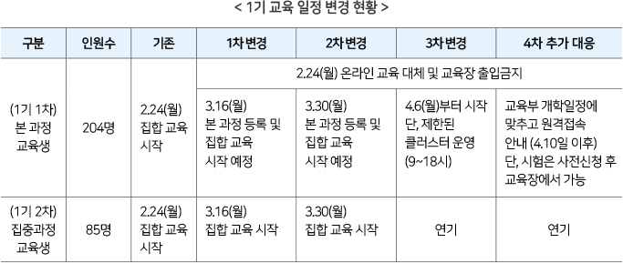ο 본 과정 교육생 대응책
재단은 본 과정 교육생에게 원활한 소프트웨어교육과 학습동기를 높여주기 위해 원격접속을 통해 네트워크 접속이 가능하도록 변경했다. 4월 10일까지 교육장 내 클러스터(아이맥 63대) 원격접속 및 서버, 네트워크 부하 테스트를 완료하고 교육생들에게 안내했다. 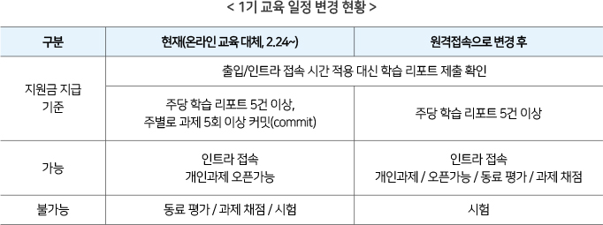ο 본 과정 시험 때 대응책
재단은 본 과정 시험을 사전 신청자에 한해 교육장 출석을 허가하고 진행했다. 교육장 출석을 1회 50명으로 제한하고 주 4회 진행 계획으로 운영 방안을 마련했다. 본 과정 시험은 다음 써클(Circle)로 넘어가기 위한 필수 절차 중의 하나이다. 그런데 시험은 교육장에서만 가능하므로 교육부 집체교육 시작 일정을 고려하여 진행하기로 했다. 그래서 시험을 통과하지 않아도 다음 써클(Circle)의 모든 개인 과제 열람과 학습을 가능토록 했다. 이런 경우에는 첫 시험 이후의 프로젝트에 대한 평가나 채점을 할 수 없어 원격방식이 아닌 현재의 온라인 교육 대체 방식으로 학습을 가능하도록 했다. 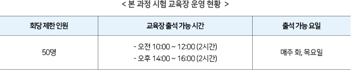ο 1개월 집중교육 대응책
재단은 4월 6일 이후에 또다시 교육 일정이 연기될 경우, 전체적인 사업 추진 일정에 영향을 미치게 되므로 1기 2차 집중교육이 연기된 일정만큼 2기와 3기 집중교육 일정을 순연키로 했다. 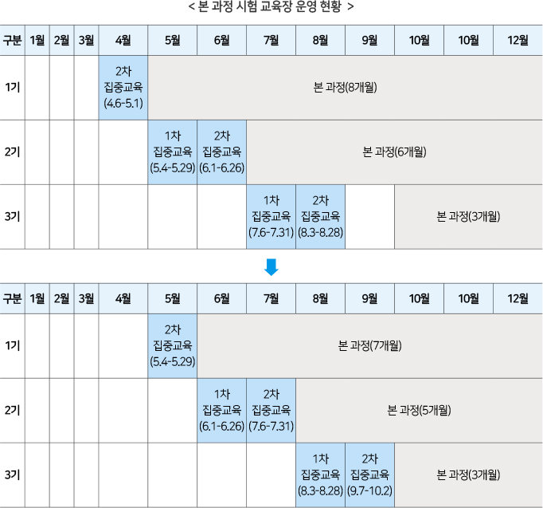 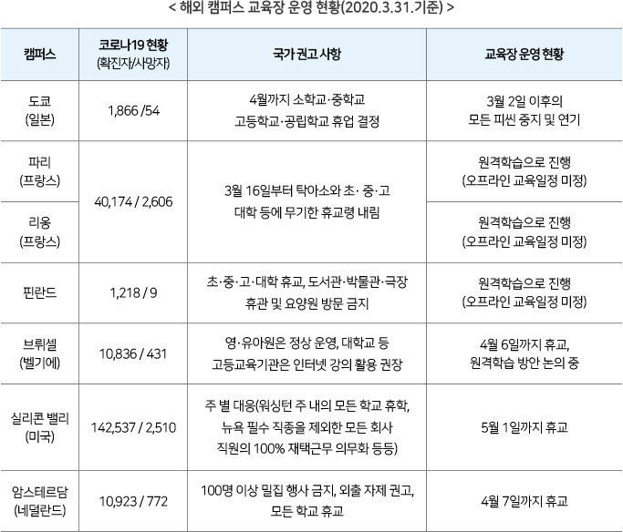2) 교육 운영 일정 및 방안(2020.5.25.기준)
재단은 코로나19 예방 및 확산 방지를 위해 정부의 변경된 방역지침에 따라 교육 일정을 순연하고 동시에 방역 관리 지침을 강화했다. 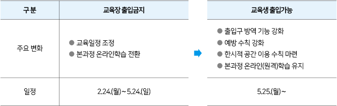(1) 교육 운영 등 행정사항
ο 1기 1차 본 과정
재단은 5월 26일부터 1기 1차 본 과정 단계별 교육을 시작했다. 우선 1단계로 단계별 써클(Circle) 진행을 위해 시험이 필요한 교육생을 대상으로 사전 신청을 통해 지정된 공간에서 시험을 진행했다. ● 일 시 : 매주 화요일 1회) 10:00~12:00, 2회) 14:00~16:00 ● 장 소 : 새롬관 2층(클러스터 1, 2) ● 인 원 : 50명 이하(교육생 간 거리 두기를 위해 시험 인원 제한) 2단계 조치로 교육장 4부제를 통해 주 1회 오프라인 학습을 새롬관 2층에서 병행했다. 주말과 화요일을 제외하고 진행하고 임시부여 번호 부여를 통해 1회당 50명 내외로 제한했다. 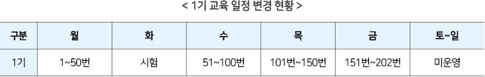ο 1기 2차 집중교육
재단은 5월 25일부터 연기되었던 1기 2차 집중교육을 진행했다. 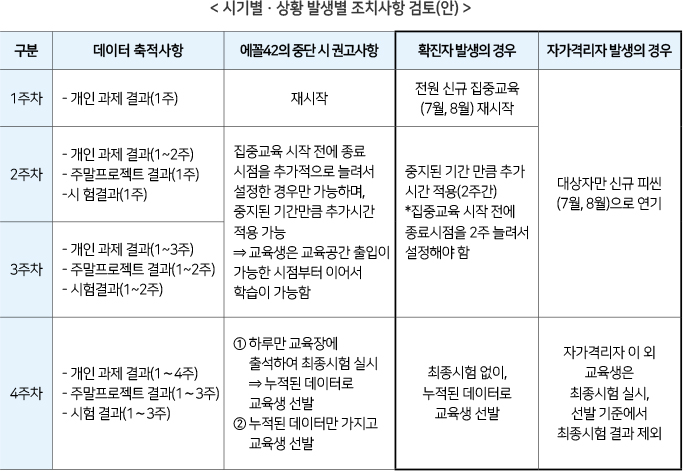ο 2기 및 3기 교육 일정
재단은 1기 2차 집중교육이 연기되면서 이후 교육 일정을 순연했다. 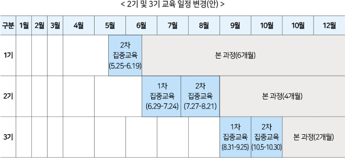ο 교육 공간 운영 방침
재단은 교육생 간 거리 두기 지침을 준수하여 ▲한 방향 앉기(지정 좌석제 운영) ▲교육생 간 1m 간격유지 ▲학습공간 층별 정원 50명 내 관리 등 방역 관리를 강화했다. 또한 교육장 출입 시 발열 체크 및 마스크 필수 착용 점검 등 건물 이용 공통조치 사항을 이행했다. 이 밖에도 교육 기간 내 다수의 인원이 모여서 식사 등을 하지 않도록 휴게실과 자료실 등을 임시로 폐쇄했다. 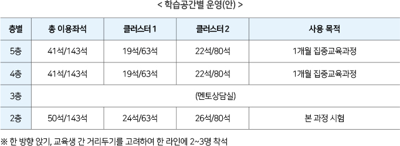ο 지원금 지급기준 한시적 변경
재단은 본 과정 교육생의 경우, 교육장 출입기록이 주 40시간 이상, 인트라 접속기록 주 20시간 이상이면 지원금을 지원하기로 했는데 온라인 교육과 원격교육으로 대체되면서 지원금 지급 기준을 한시적으로 변경했다. 1기 2차 집중교육 대상자는 본 과정 교육생의 기존 지급기준과 같은 기준으로 지원금을 지급했다. 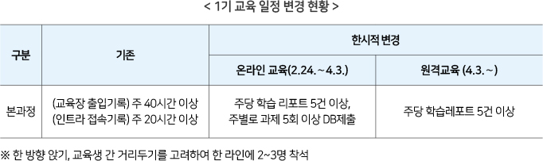(2) 사회적 거리두기 2단계 발령에 따른 대응책
재단은 정부의 코로나 19 확산 방지를 위해 사회적 거리 두기 2단계 발령(2020.8.16.)에 따라 교육 일정과 운영방식을 조정했다. 8월 17일부터 1기 본 과정은 예약제로 변경하고, 2기 2차 집중교육은 2부제로 운영을 변경했다. 교육장 폐쇄로 모든 교육은 외부에서 교육장 컴퓨터에 접속 가능한 ‘과카몰리(원격 접속 프로그램)’을 통해 과제를 수행하고 동료평가를 하는 온라인 학습으로 변경됐다. 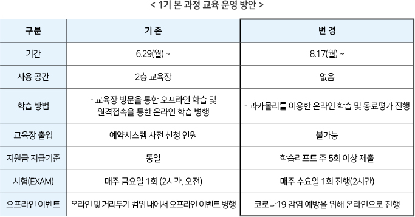 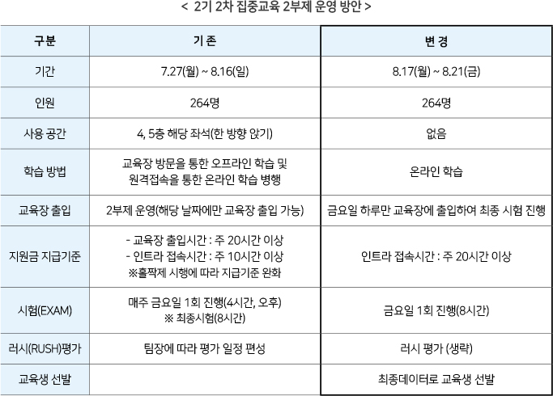 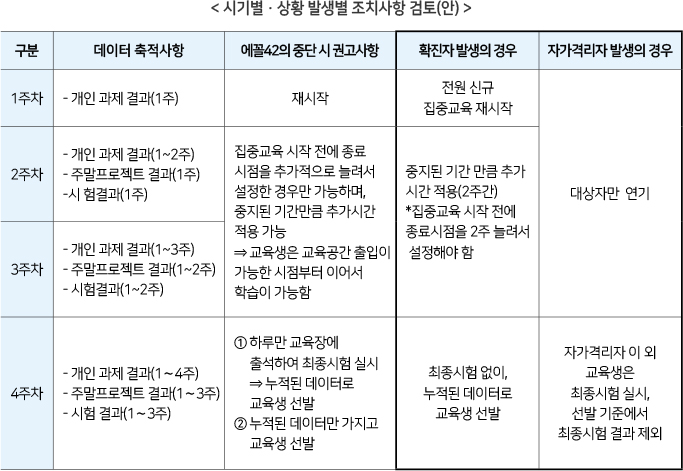(3) 예방 및 확산 방지를 위한 공통 조치사항
ο 건물 이용 관리
재단은 코로나19 예방 및 확산방지를 위한 공통 조치사항으로 교육 공간 진입 시, 사전 예방조치를 시행했다. 모든 직원 및 외부인이 교육장인 새롬관에 진입 시에는 체온을 측정하고 전원 마스크 착용 및 손 소독을 실시했다. 건물 입구에 열감지기를 설치해 직접 체온을 측정할 수 있도록 하고, 마스크를 착용하지 않을 시에는 진입을 금지했다. 체온 측정 결과, 발열(37.5도 이상) 또는 호흡기 증상(기침, 인후통 등) 등 유증상자가 발생하면 건물 진입을 차단했다. 이상 증상이 없는 경우는 행동요령을 숙지한 후 건물 진입을 허용했다. 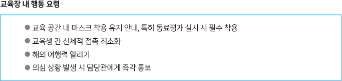 재단은 모든 외부인 방문 시에는 건물 내 출입 시각 등 일지를 작성했다. 검역 및 외부인 통제는 관리사무소와 협조하여 진행했다. 아울러 교육 공간 내외의 코로나 감염 예방을 위한 추가 예방조치도 시행했다. 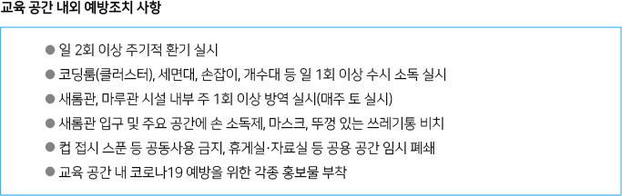ο 임시 격리공간 운영
재단은 감염 의심자 발생 시, 즉시 격리를 위한 임시 독립 공간을 마련했다. 건물 외부와 연결 동선이 짧고, 사람의 출입이 가장 적은 공간 중에서 1층 회의실 2곳(창덕궁, 덕수궁)을 임시 격리공간으로 지정해 운영했다. 코로나 의심환자가 격리되었다가 보건소로 이송되면 의심환자가 사용한 임시 격리공간은 환경부 승인 소독제 등을 이용하여 철저히 소독하도록 했다.ο 개인별 협조 사항
재단은 교육생이나 직원에 대한 개인별 협조 사항 조치도 마련했다. 본인 및 가족이 ▲코로나19 확진자가 발생한 국가를 방문했을 경우 ▲확진자가 나온 장소에 방문했을 경우 ▲가족 중 확진자 또는 의사 환자가 있는 경우 ▲확진자와 같은 시각·장소·동선 내 있었을 경우 즉각 관리관에게 통보하고 자가격리(14일)를 요청할 경우, 적극적으로 협조했다. 재단 인근 지역(서울 개포동 및 강남 일대) 내 코로나 확진자가 발생한 경우에도 적극적으로 협조했다. 대중교통 및 인근 상가 내에서 의사 환자 또는 확진자 발생 시, 같은 시간·장소·동선 내 있었는지 개인별 상황을 파악했다. 해외에서 입국 시, 반드시 건강상태 질문서에 사실 그대로 기술하고 검역관에게 설명하도록 하고, 발열 및 호흡기 증상(기침, 인후통 등)이 있는 경우 의료기관 또는 선별진료소를 방문하여 진료를 받을 때는 해외 여행력을 반드시 설명하도록 홍보했다. 이 외에도 의심 증상 발생 혹은 인지 시, 개인별 즉각 대응(담당관 및 관내 보건소 신고 등)을 위한 가이드라인 홍보 리플릿도 배포했다.ο 비상 연락망 구축
재단은 관련 부처를 비롯해 전문기관 및 지자체 등과 핫라인 등의 협조체계도 구축했다. 코로나 의사환자 또는 확진자가 발생할 경우, 반드시 비상연락망으로 연락하도록 조치했다. 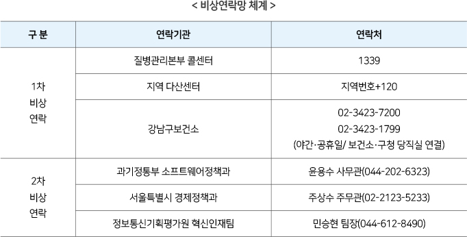(4) 교육생 대상 조치 사항
재단은 교육생 안전을 위해 코로나19 감염 예방수칙을 수시로 공지하고, 교내 방송망을 통해 매일 2회(오전/오후) 교육장 안내방송도 실시했다. 아울러 사무실 내 환기를 위한 안내방송도 매일 2회 이상 실시했다. 또한 재단은 교육 공간 내에서 ▲식음료 공통 섭취 및 식기 공통 사용 금지 ▲마스크 착용하고 학습 수행 권고 ▲한시적 지정좌석제 운영 ▲휴게 공간·자료실·수면실 임시 폐쇄 등 교육 공간에 대한 한시적 이용 수칙도 수립해 실시했다. 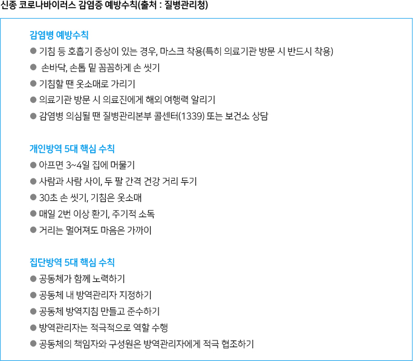 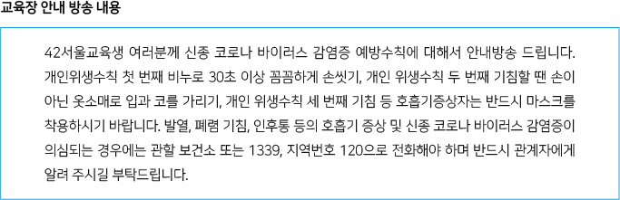(5) 상황별 대응조치 방법
ο 의사환자 발생 시 조치사항
재단은 의사환자 발견 시, 증상 유무를 확인한 후 마스크를 착용하도록 하고 비상연락망에 따라 관련 부처 및 지자체 등 관련 기관에 신고하도록 코로나 상황별 대응조치 방법을 수립했다. 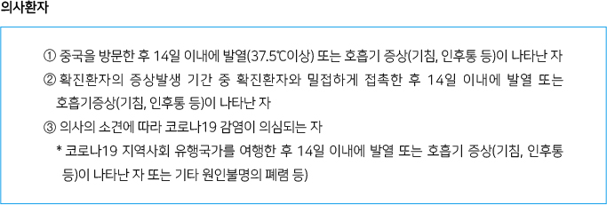 재단은 의사환자를 관할 보건소로 이송하기 전까지는 임시 격리공간에 격리하고, 해당 의사환자와 접촉한 교육생이나 직원이 있으면 보건소 검사와 역학조사 등이 이뤄질 때까지 이동하지 말고 교육기관 내 격리장소에서 개인보호구(마스크, 일회용 장갑 등)를 착용하고 대기 조치할 수 있도록 했다. 임시 격리공간을 확보할 수 없는 경우는 보건소 지시사항에 따라 수행하고, 보건소 담당자가 도착하기 전에는 의사환자와 접촉하는 담당자도 마스크를 착용하도록 했다. 의사환자의 보건소 이송 후에는 개인보호구(마스크, 일회용장갑 등)를 착용하고 알코올과 락스 등 소독제를 이용하여 의사환자가 머물렀던 격리장소를 철저히 소독하도록 했다. 보건당국에 의해 자가격리 대상자로 선정된 교육생 및 직원 또는 접촉자에 대해서는 출근하지 않고 유선으로 담당관에게 보고 후 보건당국 안내에 따라 병원 또는 자가 격리토록 조치했다.ο 확진자 발생 시 조치사항
재단은 교육 시설에서 확진 환자가 확인된 경우, 즉시 그 사실을 시설 내 모든 사람(교육장 내에서 근무하는 협력업체, 단기 근로자, 용역업체 노동자 포함)에게 안내하고, 비상연락망에 따라 관련 부처 및 지자체 등 관련 기관에 연락하도록 했다. 확진 환자는 임상 양상과 관계없이 진단을 위한 검사기준에 따라 감염병 병원체 감염이 확인된 자로서 해당 교육장을 이용하는 교육생·직원, 방문자 등이 확진 환자로 확인된 경우를 말한다. 재단은 확진 환자에 대한 질병관리청 역학조사반의 심층 역학조사 및 이동동선 소독 등 관할 보건소에서 실시하는 조치사항에 대해 모든 이용자가 적극적으로 협조하도록 조치했다. 확진 환자가 노출된 장소는 ‘질병관리청 감염 예방 집단시설·다중이용시설 소독 안내(붙임4)’ 지침에 따라 교육장 소독을 실시한 후, 다음날까지 사용을 금지하고 이후 해당 장소를 사용하도록 했다. 소독 이후 바이러스는 소독 당일 사멸하나, 소독제 사용에 따른 위해성 등을 고려하여 하루 동안사용을 금지했다. 확진 환자가 머물렀던 장소(코딩룸, 휴게실, 라운지, 사무실, 방문자 등이 방문한 장소 등 교육장 내 모든 장소)와 시간 등 이동 동선이 명확히 분리되는 시공간에서 교육장을 이용한 자에 대한 능동감시는 보건소의 조치에 따르도록 했다. 이노베이션아카데미 백서_2020 ⓒ(재)이노베이션아카데미 발 행 일 : 2020년 12월 31일 발 행 인 : 이민석 편 집 : 대외협력팀 발 행 처 : (재)이노베이션아카데미 주 소 : 서울특별시 강남구 개포로 416 개포디지털혁신파크 홈페이지 : innovationacademy.kr 본 간행물은 과학기술정보통신부의 정보통신 진흥기금을 지원받아 제작되었습니다.